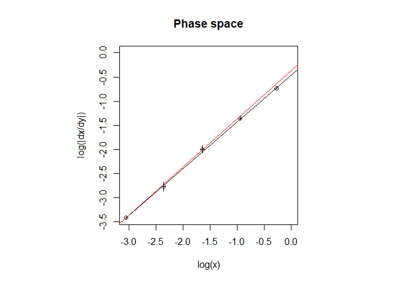
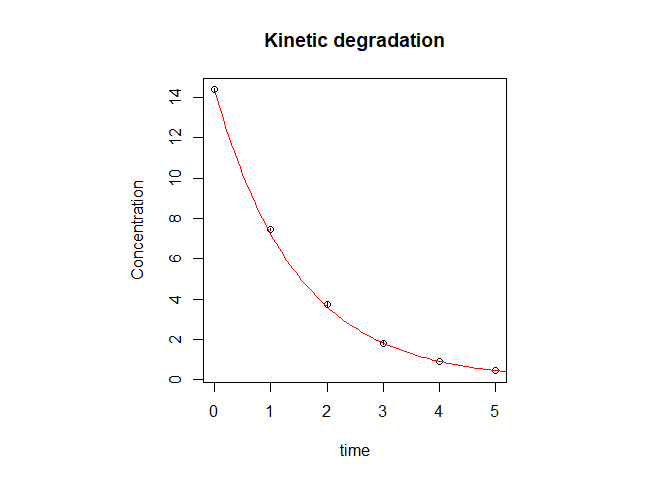

chemdeg is a package developed to assist food chemists in the objective selection of degradation kinetic models of foods and parameters estimation. The software implements a two-step method to this purpose. First, experimental data are analyzed in the so-called phase space which allows for the estimation of the order of the reaction; then the data are fitted with the appropriate standard kinetic model to estimate the reaction rate. The whole procedure is driven by rigorous statistical analyses of the results. The package also provides a routine to fit a non-standard kinetic degradation model named first-order multi-target model (FOMT).
Installation
You can install the development version of chemdeg like so:
# from CRAN
install.packages("chemdeg")
# from GitHub
library(devtools)
devtools::install_github("migliomatte/chemdeg",
dependencies = TRUE, build_vignettes = TRUE)Usage
Determination of the reaction order
The determination of the reaction order of a generic degradation kinetic model is often prone to subjectivity. By analyzing the phase space of the kinetic system it is possible to statistically determine the reaction order. This information can then be used to determine the reaction rate constant. In the package chemdeg the whole analysis can be performed with the function det_order():
res <- det_order(ord1)
#> Reaction order estimated: 1where ord1 is a built in function for 1st-order kinetic model data.
The function results returns statistics and parameters estimates:
results(res)
#>
#> Linear regression in the phase space:
#> log(dx/dt)= 0.97 log(x) + ( -0.46 )
#>
#> Estimate of n:
#>
#> Estimate Std. Error t value Pr(>|t|)
#> 9.701806e-01 4.235714e-03 2.290477e+02 1.835114e-07
#>
#> Confidence interval of n:
#> 2.5 % 97.5 %
#> 0.9567007 0.9836605
#>
#> Statistical analysis indicates that an order 1 degradation kineitc model is likely to describe the data.
#> The null hypothesis H0:
#> "The process is described by an order 1kinetic model"
#> cannot be rejected.
#>
#> Non-linear least squares regression was performed with an order 1 kinetic model:
#>
#> Estimate of k:
#> Estimate Std. Error t value Pr(>|t|)
#> k 0.6878765 0.002626997 261.8489 1.541636e-11
#> In attesa che venga eseguita la profilazione...
#> Confidence interval of k:
#> 2.5% 97.5%
#> 0.6812276 0.6947116
#>
#> Goodness-of-fit:
#> Value
#> AIC: -11.933893
#> AICc: -10.933893
#> BIC: -12.350374
#> RMSE: 2.002812
#> Chi-sq_red: 5.379602
#> -----------------------------------------------------Plots of the data in both the phase space and the normal concentration vs time space along with their best fits with model equations can be accessed with plot_ord():
plot_ord(res)
First-order multi-target model fitting
The following is an example of first-order multi-target (FOMT) model. The FOMT() function can be used to perform the fit:
fit_fomt <- FOMT(fomtdata)
summary(fit_fomt)
#>
#> Formula: y ~ 1 - (1 - exp(-k * t))^n
#>
#> Parameters:
#> Estimate Std. Error t value Pr(>|t|)
#> k 0.056836 0.008206 6.926 0.000449 ***
#> n 9.478174 3.926148 2.414 0.052280 .
#> ---
#> Signif. codes: 0 '***' 0.001 '**' 0.01 '*' 0.05 '.' 0.1 ' ' 1
#>
#> Residual standard error: 0.04243 on 6 degrees of freedom
#>
#> Number of iterations to convergence: 10
#> Achieved convergence tolerance: 3.98e-06where fomtdata is an example data-frame provided with the package.
If the FOMT() function does not converge, it is possible to use the nls function from stats package as follows:
fit_fomt1 <- nls(y ~ FOMTm(t, k, n),
data = list(y = fomtdata$tCQA_AA, t = fomtdata$time_h),
start = list(n = 10, k = 0.05)
)
summary(fit_fomt1)
#>
#> Formula: y ~ FOMTm(t, k, n)
#>
#> Parameters:
#> Estimate Std. Error t value Pr(>|t|)
#> n 9.478163 3.926141 2.414 0.052280 .
#> k 0.056836 0.008206 6.926 0.000449 ***
#> ---
#> Signif. codes: 0 '***' 0.001 '**' 0.01 '*' 0.05 '.' 0.1 ' ' 1
#>
#> Residual standard error: 0.04243 on 6 degrees of freedom
#>
#> Number of iterations to convergence: 9
#> Achieved convergence tolerance: 5.453e-06Goodness-of-fit statistics
chemdeg implements the chi-squared reduced statistics (χred2 = χ2/df where df are the degrees of freedom) and the Akaike Information Criterion with correction for small sample size (AICc) as goodness of fit measures. These can be accessed with the functions chiquad_red()and AICC(), respectively.
To access the full table comprising the Bayesian Information Criterion (BIC), Akaike Information Criterion (AIC), AICc, Root Means Squared Error (RMSE) and χred2 (from both package stats and chemdeg) call the function goodness_of_fit():
goodness_of_fit(fit_fomt)
#> Value
#> AIC: -24.15681095
#> AICc: -21.75681095
#> BIC: -23.91848633
#> RMSE: 0.04243006
#> Chi-sq_red: NAFor more details see
vignette("chemdeg_basics","chemdeg")